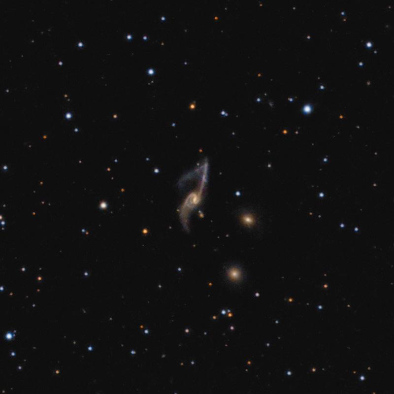
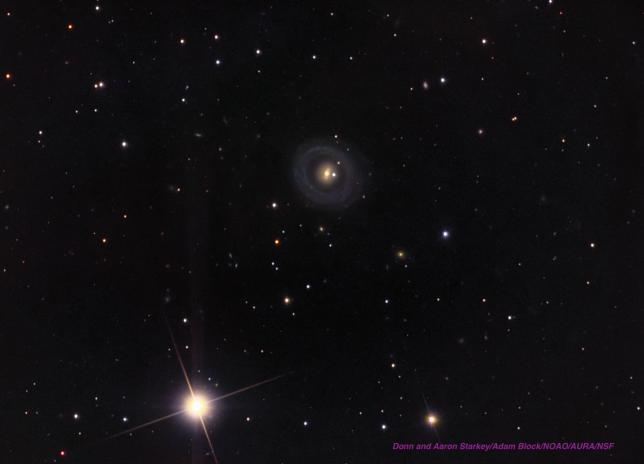

NGC 6028 - The Nearest and Brightest Hoag Ring
- Name: NGC 6028
- RA/Dec: 16 01 28.9 +19 21 34
- Size: 1.3'x1.2'
- Mag: V = 13.5, B = 14.4
- Type: S0-a Ring
- Aliases: NGC 6046 = UGC 10135 = MCG +03-41-043 = CGCG 108-063 = I Zw 133 = PGC 56716
At a distance of roughly 200 million l.y., NGC 6028 is the nearest Hoag-type Ring galaxy. At 1/3 the distance of Hoag's Ring, it is significantly brighter but gets little publicity among amateurs -- probably because it has no iconic HST image.
French astronomer Guillaume Bigourdan found NGC 6028 on 4 May 1886 with the 12-inch refractor at the Paris Observatory. But it was William Herschel who originally discovered this galaxy on 14 Mar 1784 and recorded "A nebula suspected by 157 and the suspicion strengthened by 240, but the latter power does not remove all doubt. It follows 3 pretty bright stars making an arch [concave towards np or nnp direction by a diagram], south of which arch there is a still brighter star."
Herschel catalogued this object as H. III 33 (and later by Dreyer as NGC 6046), but unfortunately his position was 3.5 min of RA too far east. Modern sources may show NGC 6046 as nonexistent or lost, but Harold Corwin uncovered NGC 6046 = NGC 6028.
How close is this object in appearance to Hoag's Ring? Well, here's the SDSS image --

The core of the galaxy should show up in a 10-inch scope in good conditions, but I'm very curious how small a scope will display the outer ring? I've yet to look for the outer detached ring in my 24", but here are my notes through Jimi's 48-inch in 2012. By the way, while you're in the area, you should pick up CGCG 108-053, just 7' northwest of NGC 6028.
"This Hoag-type ring galaxy contains a bright, very small core, ~18" diameter. A star is right at the south edge of the core. A 1' diameter detached outer ring would occasionally pop into view and the ring appeared as a slightly elongated Cheerio surrounding the core!"

"GIVE IT A GO AND LET US KNOW"
GOOD LUCK AND GREAT VIEWING!
Steve's follow-up — June 24th, 2014, 06:33 AM
The detached ring in NGC 6028 seems like it should be much easier to view than Hoag's Ring, though sometimes the DSS appearance can be deceiving. Any other failed or successful attempts?